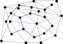
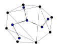
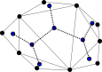

Homework 1: Discrete Math Practice (22 Points)
Chris Tralie
Due Sunday 9/5/2021 at 11:59PM
Overview / Logistics
The purpose of this problem set is to get you warmed back up on notation and proof techniques that you will use in the course. Upload your solutions to Canvas as a word document, a PDF document, or as a picture of legible handwriting.
Problem 0 (3 pts)
There are 3 easy points to earn here:- Read over the syllabus and complete the 1-point syllabus quiz at this link
- Click here to complete the personal survey for the course.
- Click here to sign up for the class Discord. Post a message on the #general channel and let us know what your favorite animal is!
As an ungraded final step, click here to fill out an office hours survey for what times you can make if you want to make sure that the hours I choose work with your schedule. Put a check next to every time block for which you can make at least 30 minutes on at that time on that day of the week.
Problem 1 (3 pts)
Write a short informal English description of the following sets. Recall that ℕ are the natural numbers and Z are the integers
-
\[ \{ n| n = 2m, m \in \mathbb{N}, \text{ and } n = 7k, k \in \mathbb{N} \} \]
-
\[ \{ n| n = 2k + 1, k \in \mathbb{Z} \} \]
-
\[ \{ n| n = 2^k, k \in \mathbb{N} \} \]
Problem 2 (3 pts)
Write a formal description of the following sets using set notation
- The set containing all natural numbers which are an odd power of 2
- The set containing all natural numbers which are an even power of 2, excluding 1
- The set containing the numbers corresponding to all 300 level CS courses at Ursinus
Problem 3 (3 pts)
Prove that there are at least two people in Philadelphia with the same number of hairs on their head.
HINT: Use the pigeonhole principle. You'll have to look a couple of numbers up as well (cite your sources)
Problem 4 (3 pts)
Write truth tables for the following expressions
-
\[ x \wedge (y \vee (z \wedge x)) \]
-
\[ (x \vee y) \wedge (x \vee z) \wedge \neg y \]
-
\[ z \vee \neg (x \wedge y \wedge z) \]
Problem 5 (3 pts)
Find the error in the following proof that every student on campus is running the same operating system (if this were actually true, it would be a CS professor's dream, particularly if that OS was Linux...)
Claim: Any group N students at Ursinus are running the same operating system
Proof: By induction on N
Base Case: For N = 1, there's only one person to consider, so no matter what operating system they're running, everyone is running the same operating system.
Inductive Step: For N > 1, assume the hypothesis is true for N-1 students, and prove that it is true for N. Take any set S of N students. We show that all of the students in this group are using the same OS. Remove some arbitrary student a from this set to obtain the set S1; that is. \[ S = S_1 \cup \{ a \} \] By the inductive hypothesis, all students in S1 are running the same OS. Now remove a different student b from S to obtain different set S2; that is \[ S = S_2 \cup \{ b \}, b \neq a \] By the same reasoning, all of the students in S2 are running the same OS. Since a and b are different, this implies that \[ a \in S_2, b \in S_1 \] which, by the inductive hypothesis, means that a is using the same OS as everyone in S2, and b is using the same OS as everyone in S1. Since the people overlapping in S1 and S2 are using the same operating system, it follows that everyone is using the same operating system. Proof complete!
Hint: Pick a particular value for N and try drawing out an example that traces through the argument. Can you find an N for which some line of reasoning breaks down?
Problem 6 (4 pts)
In this problem, we will see how three definitions play together in an interesting way
Definition 1: Simple Triangulation
A simple triangulation of a set of at least 3 points in the plane is a set of triangles drawn between the points satisfying the following properties
- Every point is touched by at least one triangle
- If two triangles intersect, then they intersect along the entirety of exactly one edge
- The entire set of triangles is connected, and there are no holes (missing triangles) in the middle
Definition 2: Dual Graph
The dual graph of a simple triangulation is the graph obtained by creating a node for each triangle and with edges between nodes corresponding to triangles that overlap at an edge. The picture below shows the dual graph of the above triangulation superimposed on the triangulation
Definition 3: Convex Point Set
A convex point set is a set of points in the plane whose convex hull is empty. In other words, if I snap a rubber band around the outside of all of the points, there will be no points on the inside. Below is an example of a convex point set
Below is an example of a point set that is not convex
Click here for an interactive demo of convex hulls of points sets.
Your Task
Prove by induction that the dual graph of a simple triangulation of a convex point set is a tree. Below are two examples
|  |  |
- You may use the fact that removing any point from a convex point set yields a convex point set
- You may use the fact that any simple triangulation has an ear, or a triangle along the outside that can be removed, leaving a smaller valid simple triangulation
- Look back in Sipser 0.2 for the definition of a tree as a special case of a graph, and prove that you're satisfying the properties of a tree